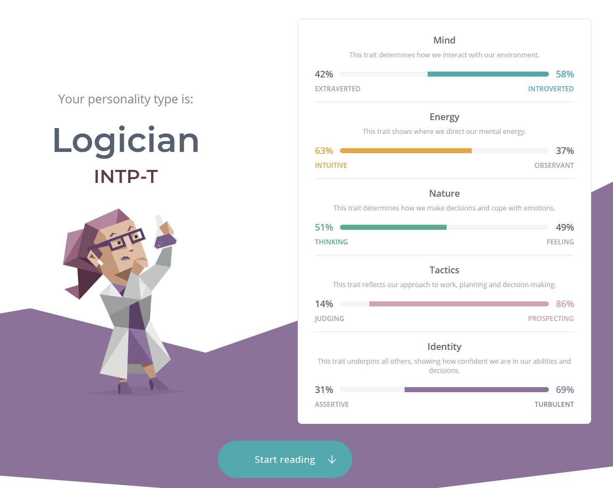
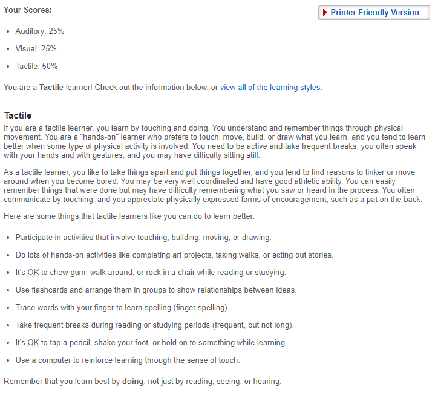
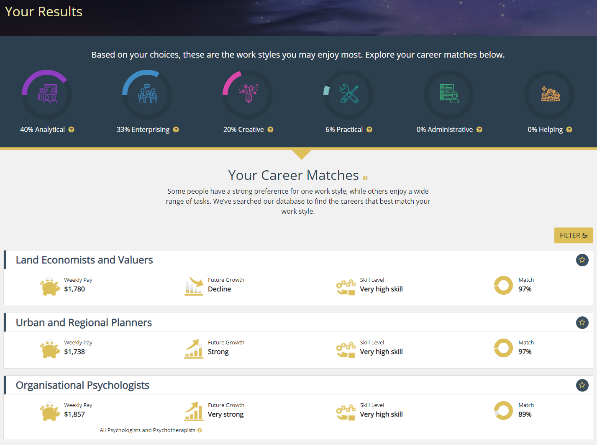

The Myer Briggs Test
**I would like to preface this section of by stating I do not support the Myer-Briggs testing and I hope that one day it is no longer seen as necessary. I also believe the tests are based in many worrying racist undertones (Merve Emre, 2015), that much talking needs to be done about.**
That said, as I want to do well in this assignment, here are my test results:
What do these results mean for me?
The Myer-Briggs test, having done it before many times in my life, is different every time I take it. I took it in last in February 2020, before the COVID lockdowns, and was an ENFJ-A...almost the complete opposite of today’s results. I really doubt the authenticity of the test and especially the results as it feels like some sort of horoscope based around confirmation bias to me.
The Online Learning Styles Test
What do these results mean for me?
For the learning style test, while this may be playing into confirmation bias, this answer has been consistent since primary school, where I was called a “kinetic” learner, and teachers would put me in class with other “kinetic” learners as it made it easier to teach them.
The Australian Government Job Outlook Test
What do these results mean for me?
For the final test I chose the Australian government’s Job Outlook Career Quiz, which I have taken before. As before I find my results similar to previous results but still have no idea how accurate they feel to me, as the top 3 jobs they “match” with me do not interest me at all.
Final thoughts - refllection and future teams
These results won’t influence my behaviour in a team because I have worked in many different teams before, of different subjects, careers and ethnic groups, and find myself being able to shift and fulfill different roles as the group requires.
If I am being honest, I believe these pseudo-psychological tests really shouldn’t influence anyones decision making for team or career choices. When my career advisor took me through similar testing I ended up choosing a career pathway which led me to a brick wall and a lot of disappointment. Choosing outside of these tests will help more in any decision.